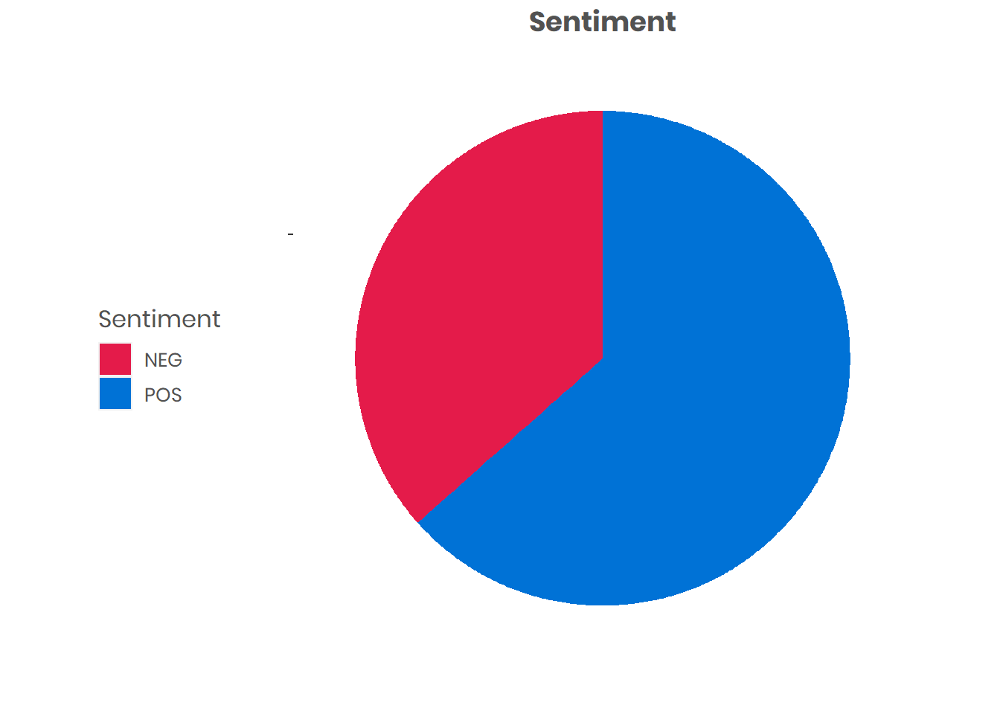

Using the “12 month progress” field, we can look at the unstructured data of the Measure and Evaluation element of an award. We can do this using word frequency, topic extraction using LDA (Latent Dirichlet Modelling), and also assigning sentiment.
The wordcloud was produced through text processing ) which stripped out punctuation and non-relevant words, and the word frequency was weighted with the ‘importance’ given to each word.
The topic modelling was created using the LDA model, and the “Elbow” method applied to assign the number of topics (more information at this site).
| Topic | Terms |
|---|---|
| topic_0 | delivery, date, game, equipment, day, venue, week, event, time, issue |
| topic_1 | team, player, club, woman, child, session, school, age, participant, girl |
| topic_2 | session, people, participant, activity, challenge, support, volunteer, issue, staff, time |
| topic_3 | school, coach, course, club, session, coaching, programme, term, level, sport |
| topic_4 | training, club, boat, people, time, weather, instructor, season, issue, delivery |
| topic_5 | pool, equipment, position, club, manager, gala, committee, plan, april, timing |
| topic_6 | sport, venue, centre, session, club, facility, time, student, staff, pitch |
Sentiment score using a lexicon-based approach: The approach assigns a sentiment to each word of positive or negative. This can be translated int a score (number of positive words - number of negative words) / total number of words).
The number of Small Grants projects with a comment in the “12 month progress” field: 949

| Document | Sentiment | Number of Words |
|---|---|---|
| -continuous commitment individual commit session hold school compare gym whereby pay monthly membership schedule session exclusive due instructor deliver license teach appealing encourage continuous commitment parent gym | POS | 54 |